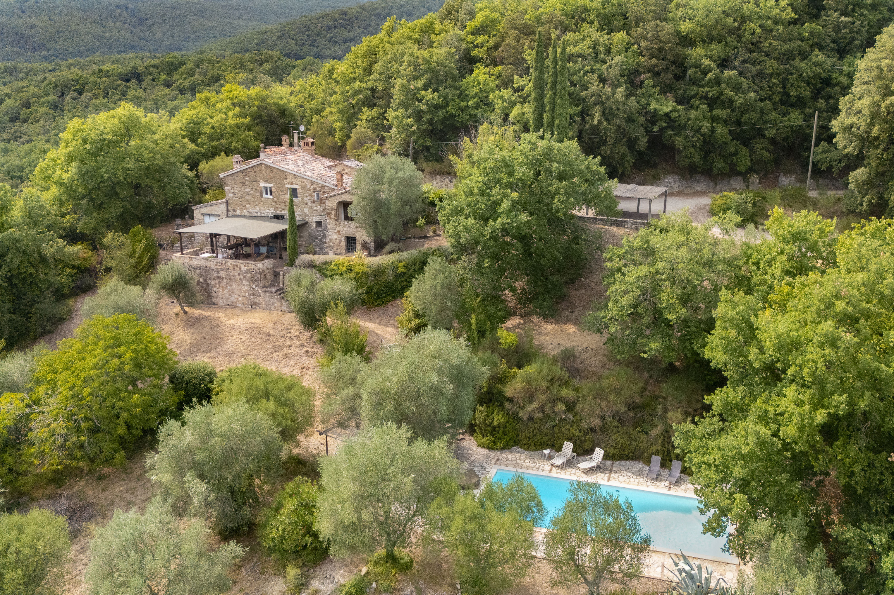

€730.000
Hills a few kilometres from Todi, Umbria
The character brief in stone: 18th-century walls, exposed beams, terracotta, stone fireplaces, olives/oaks/cypress and a built 5×12 pool. Two independent houses plus a 30 m² annex, roofs newly insulated — habitable now. €730k for 390 m² is a restored-with-pool bargain.
Opened 30 Aug 2026. Schema Offer €730000. Features hasSwimmingPool true. 5 bed / 4 bath / 390 m² / 6,800 m². Main house kitchen+living+terrace; second one-level house 3 bed/3 bath; annex with bath+A/C. Not umbertide-casale W-046MC7 or panicale listings.